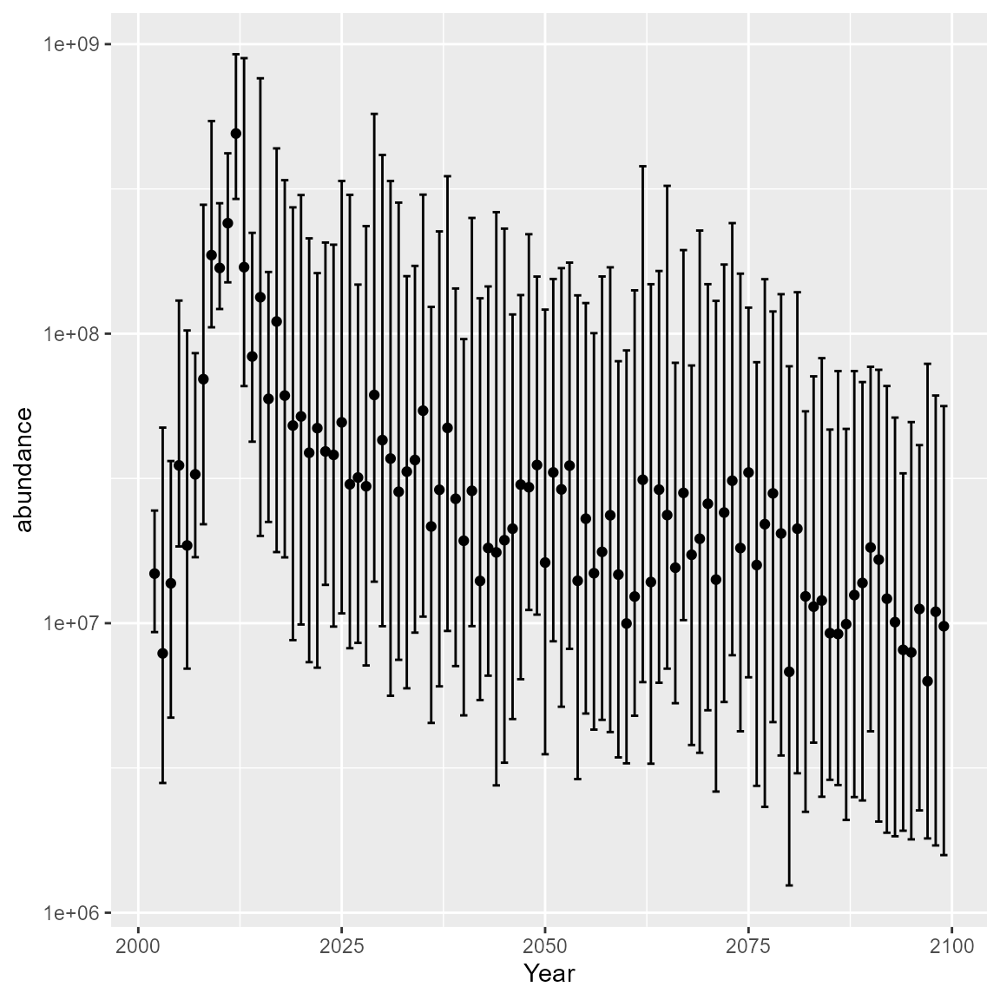

Probabilistic forecasts
Arnaud Grüss, James T. Thorson, Andrew J. Allyn
Source:vignettes/web_only/probabilistic_forecasts.Rmd
probabilistic_forecasts.RmdProbabilistic forecasts with spatio-temporal models
We developed new approaches for forecasting with spatio-temporal species distribution models (SDMs) that not only generate efficient predictions, but also separate and quantify different sources of prediction uncertainty (Grüss et al. n.d.). In these models, uncertainty can arise from: * Past process errors — randomness in the estimated random effects that represent past temporal, spatial, or spatio-temporal variation. * Future process errors — uncertainty about how random effects will evolve into the future. * Parameter uncertainty — variability in the estimated fixed effects, which in turn affect the structure of the spatio-temporal random fields.
These sources of uncertainty can be propagated with the function
project, which includes three key arguments:
past_var, future_var, and
parm_var. * past_var is a logical argument
which indicates whether to re-simulate past process errors from the
predictive distribution of random effects, thus changing the boundary
conditions of the forecasts. * future_var is a logical
argument which indicates whether to simulate future process errors from
Gaussian Markov Random Fields (GMRFs) or just compute the predictive
mean. * parm_var is a logical argument which indicates
whether to re-sample fixed effects from their predictive distribution,
thus changing the GMRFs for future process errors.
Here, we demonstrate one of our approaches, the “process error resampling approach”, using fisheries-independent survey data for Bering Sea capelin (Mallotus villosus) and generating forecasts to the next century. For Bering Sea capelin, we first fit a delta-Gamma model to biomass catch rate data and then use the fitted model to forecast the index of relative biomass to the next century.
Load data and define mesh
# Load data
data( bering_sea_capelin_forecasts )
Data <- bering_sea_capelin_forecasts$Data
Data$var <- "capelin"
# Make mess
mesh <- fm_mesh_2d( Data[,c("Lon","Lat")], cutoff = 1 )Define autoregressive structure
We next define an autoregressive structure to allow hotspots to be propagated forward in time. For the Bering Sea capelin application below, preliminary analyses determined that spatio-temporal variation should be modelled as an AR1 process in both linear predictors of the spatio-temporal SDMs. However, dynamics could instead be fitted and forecasted using a single linear predictor using the Tweedie distribution.
# Define spatial variation
space_term <- "
capelin <-> capelin, sd_space
"
# Define temporal and spatio-temporal variation based on the outcomes of preliminary analyses
time_term <- "
capelin <-> capelin, 0, IID_sd
"
spacetime_term <- "
capelin <-> capelin, 0, sd_spacetime
capelin -> capelin, 1, ar1_spacetime
"Fit model
Finally, we fit the model
# Fit the model (turning off use_anisotropy to save time)
fit <- tinyVAST(
formula = Wt ~ 1 + sst_anomaly + offset(log(AreaSwept_km2)),
data = Data,
space_term = space_term,
spacetime_term = spacetime_term,
time_term = time_term,
family = delta_gamma( type = "poisson-link" ),
delta_options = list(
formula = ~ 1,
space_term = space_term,
spacetime_term = spacetime_term,
time_term = time_term
),
spatial_domain = mesh,
control = tinyVASTcontrol(
use_anisotropy = FALSE
),
space_columns = c("Lon","Lat"),
time_column = "Year",
variable_column = "var",
variables = "capelin",
spatial_varying = ~ 0 + sst_anomaly,
times = min(Data$Year):max(Data$Year)
)Projections and forecasts
The process error resampling approach involves three steps. * Step 1
consists of estimating uncertainty in the random effects of temporal,
spatial and/or spatio-temporal variation using the precision (inner
Hessian) matrix for random effects, conditional upon maximum-likelihood
estimates for fixed effects; * Step 2 consists of resampling the
temporal, spatial and/or spatio-temporal variation random effects from
their estimated distribution to produce parameter draws. * Step 3
consists of sampling values for random effects during the forecast
period from their conditional distribution, starting from the resampled
value of random effects in the most recent year of data as initial
condition, using the conditional krigging formula. To implement the
process error resampling approach, the following settings are needed in
the function project: past_var = TRUE,
future_var = TRUE, and parm_var = FALSE.
# Generate projections
# (using 50 candidate parameter draws to speed up vignette)
New_Data <- bering_sea_capelin_forecasts$New_Data
projected_index <- numeric(0)
for( rI in 1:50 ){
message( Sys.time(), ": starting ", rI )
proj = project(
object = fit,
newdata = New_Data,
extra_times = (max(Data$Year)+1):max(New_Data$Year),
past_var = TRUE,
future_var = TRUE,
parm_var = FALSE
)
index_t = tapply( proj, INDEX = New_Data$Year, FUN = sum )
projected_index = cbind( projected_index, index_t )
}We can then plot and inspect the predictive interval, to confirm that bridges uncertainty between short-term forecasts and long-term projections
# Plot the projected index of relative biomass
Y_tq <- t( apply( projected_index, MARGIN = 1, FUN = quantile,
probs = c( 0.1, 0.5, 0.9 ) ) )
colnames(Y_tq) = c("lower", "abundance", "upper")
DF = data.frame( Year = as.numeric(rownames(Y_tq)), Y_tq )
ggplot( DF, aes(x=Year) ) +
geom_point( aes(y=abundance) ) +
geom_errorbar( aes(ymax=upper, ymin = lower) ) +
scale_y_log10()
Alternative options
Another approach to forecasting with spatio-temporal SDMs that we
developed is the “conditional approach.” The conditional approach
implements only Step 3 from the process error resampling approach, and
conditions samples for random effects in the forecast period using as
initial conditions the empirical Bayes predictions of random effects in
the most recent year of data.
To implement the conditional approach, the following settings are needed
in the function project: past_var = FALSE,
future_var = TRUE, and parm_var = FALSE.
We also developed approach to forecasting with spatio-temporal SDMs
called the “mixed effects resampling approach,” which considers
uncertainty in both fixed and random effects for generating forecasts,
using the joint precision matrix. The mixed effects resampling approach:
1. assumes that the collection of fixed and random effect parameters of
a spatio-temporal SDM can be described by a multivariate normal (MVN)
distribution with mean values equal to the maximum likelihood estimates
and variability defined from a covariance dependency matrix; and 2.
samples from this MVN distribution to produce forecasts. However,
preliminary analyses revealed that the mixed effects resampling approach
work for some fish populations, but not others; in brief, the mixed
effects resampling approach works well when variances are relatively
low, but poorly for fish populations when variances are high and likely
non-normal. To implement the mixed effects resampling approach, the
following settings are needed in the function project:
past_var = TRUE, future_var = TRUE, and
parm_var = TRUE.
One important consideration when generating forecasts with spatio-temporal SDMs are autoregressive structures on temporal and spatio-temporal variation:
Regarding temporal variation, analysts may prefer to model temporal variation first as a first-order autoregressive (AR1) process and then, if the estimated degree of autocorrelation in temporal variation approaches one, as a random walk (RW) process. If modelling temporal variation as an AR1 or a RW process proves unwarranted (e.g., because the variance of temporal variation approaches zero), it can instead be modelled (1) as an independent and identically distributed (IID) random effect, which sets the variance of temporal variation to zero, or, as a last resort, (1) as a constant, fixed effect, which sets both the estimated degree of autocorrelation in temporal variation and the variance of temporal variation to zero. Preliminary analyses are needed to identify the best autoregressive structures on temporal variation, allowing for both model estimation/convergence and sensible future predictions. For the Bering Sea capelin application below, preliminary analyses determined that temporal variation should be modelled as a random IID effect in both linear predictors of the spatio-temporal SDMs.
Regarding spatio-temporal variation, analysts may model spatio-temporal variation as an AR1 process, a RW process, or an IID random effect. However, analysts may prefer to model spatio-temporal variation as an AR1 process rather than as a RW process, because the latter results in the spatio-temporal variation term having a variance across space that increases progressively during the forecast period. Then, when spatio-temporal variation is extrapolated to calculate densities, forecasted indices of relative abundance are progressively dominated by the predicted density at a few (or single) extrapolation location(s).
Runtime for this vignette: 7.78 mins